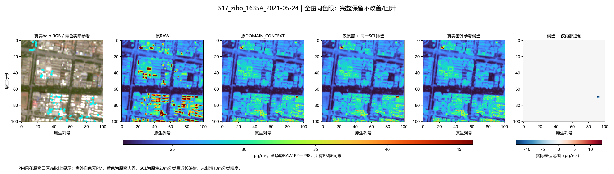
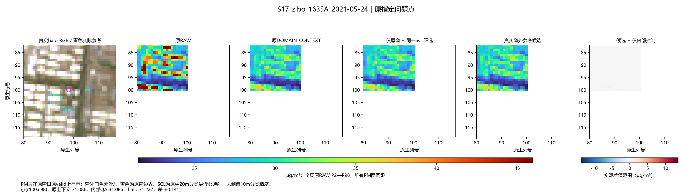
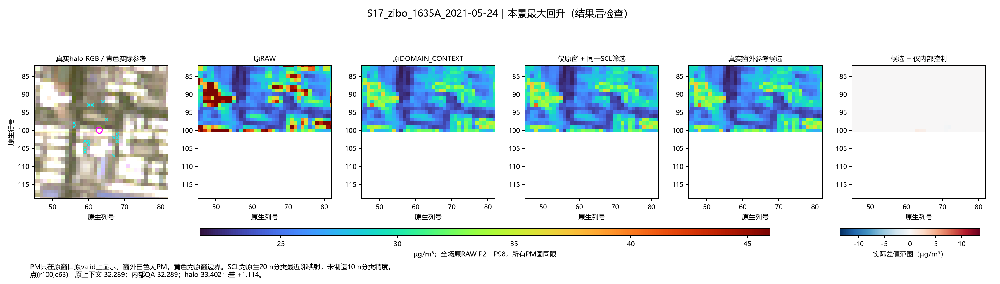
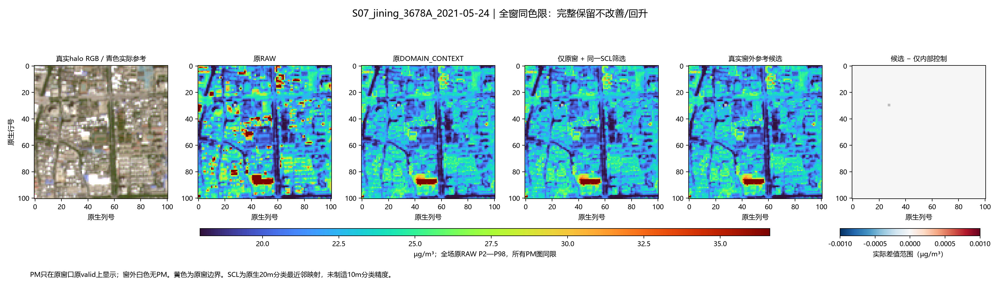
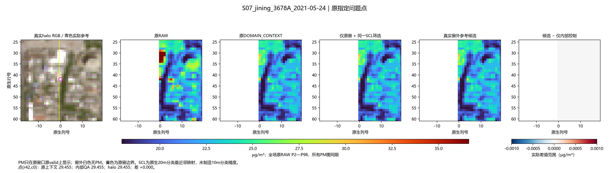

S17_zibo_1635A_2021-05-24




唯一新候选 TRUE_HALO_CONTEXT；原DOMAIN_CONTEXT和仅内部SCL控制同时呈现。所有PM仍只在原valid上，原RAW色限固定。原生20m SCL只作非植被/云影雪筛选。未按指定点选择参考。
济宁：当前DOMAIN没有参考不足核心，实际不改。淄博：部分位置下降，部分回升；真实外窗不会自动令所有屋顶更低。原窗口/核心已有支持处理均未撤回。




